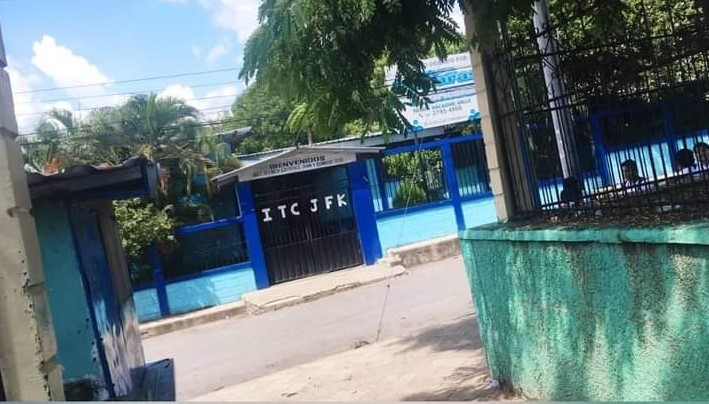
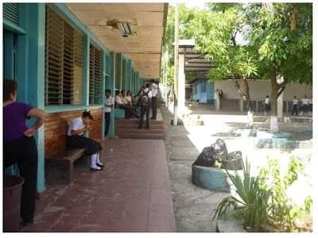
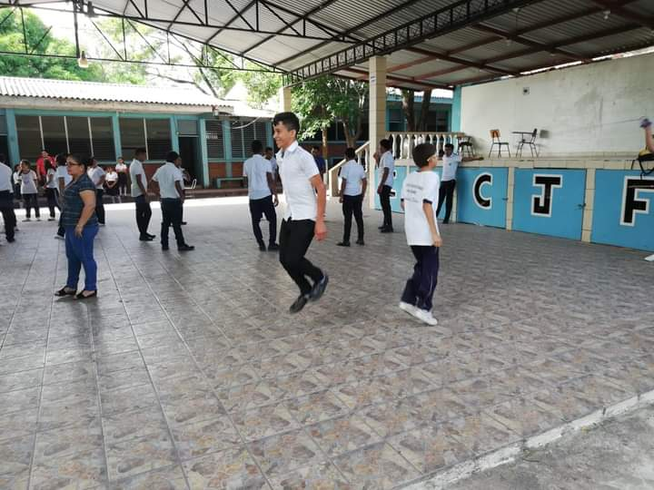
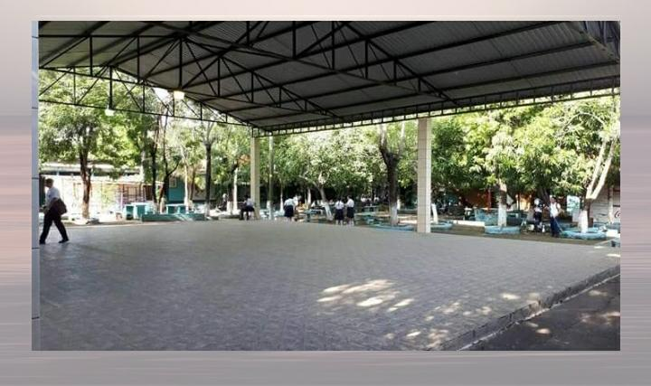
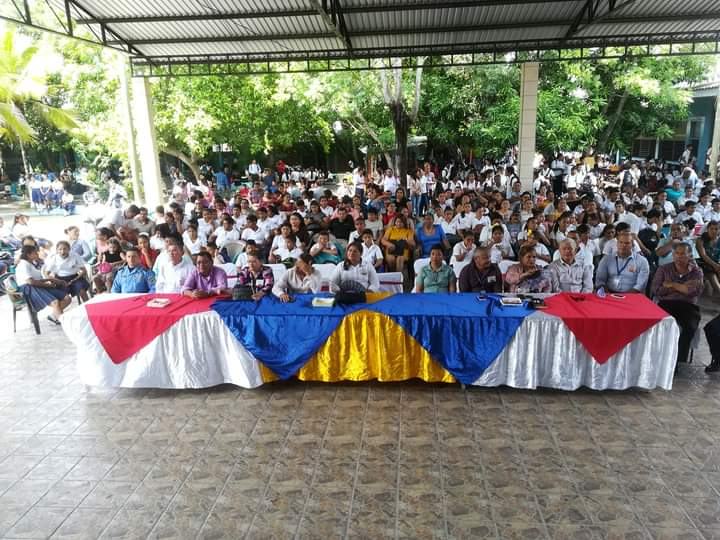
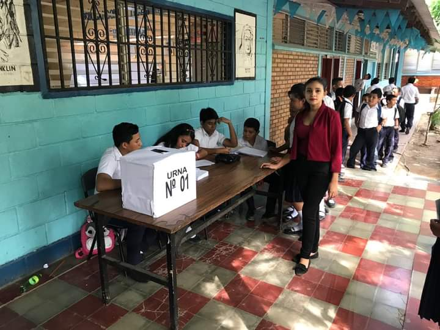
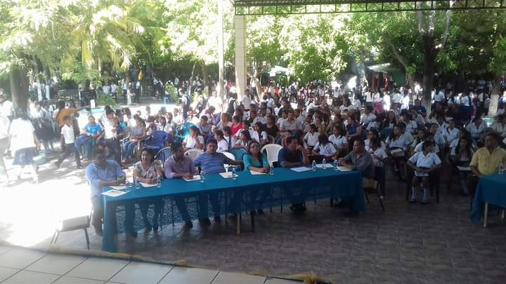

BIENVENIDOS A LA PÁGINA DE PROMOCIÓN DE LA CARRERA DE INFORMÁTICA
INSTITUTO TÉCNICO CONTABLE JOHN F. KENNEDY
¿QUE ES LA INFORMÁTICA?
La informática suele ser definida como aquella ciencia que se dedica a estudiar el tratamiento de la información mediante medios automáticos, es decir, la ciencia de la información automática. Se trata de una sumatoria de conocimientos científicos y de técnicas que posibilitan el tratamiento automático de la información mediante el uso de computadoras. La ciencia de la informática (popularmente llamada como computación) se divide en diversas ramas como la programación, la arquitectura de redes y computadoras, electricidad y electrónica, inteligencia artificial (entre otras).
HISTORIA DE LA INFORMÁTICA
El origen de la informática se sitúa en la segunda mitad del siglo XX, aunque la primera generación de computadoras se desarrolló entre 1951 y 1958, las cuales funcionaban con válvulas, cilindros magnéticos e instrucciones internas. Eran ordenadores que funcionaban muy lentamente, eran muy grandes y generaban mucho calor. Pero con el paso de los años la evolución de la informática no ha dejado de mejorar gracias a las nuevas tecnologías, sobre todo teniendo en cuenta el circuito integrado, el móvil e Internet.
A día de hoy podemos distinguir hasta cinco generaciones en la evolución de la informática: Primera generación; Que va de 1940-1952 y que se basa en la tecnología de tubos al vacío. Se trata de un periodo en el que se construyeron muchas máquinas de cálculo que, debido a su gran tamaño, necesitaban un sofisticado sistema de enfriamiento y funcionaban muy lentamente. La segunda generación (1952-1964) tiene como protagonistas los transistores, los cuales solucionaron el problema del tamaño y el calentamiento de las computadoras, ya que es un semiconductor de electricidad capaz de imitar y reproducir un proceso lógico. La tercera generación en la evolución de la informática (1964-1971) se centra en la tecnología de microcircuitos integrados, a partir de los cuales surgen los teleprocesos. En la cuarta generación (1971-1981) aparecen los microprocesadores y las computadoras personales, las redes, los procesos compartidos e interactivos y también se diversifica su uso. En la quinta generación (1981-actualidad) Se comienza a utilizar la inteligencia artificial, tanto en lo que se refiere al hardware como al software, para resolver problemas complejos como puede ser la traducción automática de una lengua a otra. Esta quinta generación, que vivimos actualmente, está consiguiendo cambios realmente espectaculares en la evolución de la informática, mediante una mayor rapidez en el procesamiento, desarrollo de programas, desarrollo multimedia y avances en inteligencia artificial y en realidad virtual, entre otras muchas sorpresas que vendrán. En Apen, como especialistas en mantenimiento y seguridad informática, nos encanta conocer todas las particularidades de nuestro sector, aportando nuevos servicios y productos que puedan mejorar la gestión informática de cada uno de nuestros clientes. Las soluciones de impresión, el software de gestión empresarial o el servicio integral de mantenimiento y seguridad informática conforman el equipo perfecto para la estabilidad y gestión informática de cualquier empresa.
10 RAZONES PARA ESTUDIAR INFORMÁTICA
1. ¡La informática es parte de todo lo que hacemos!
La computación y la tecnología informática son parte de casi todo lo que toca nuestras vidas, desde los coches que conducimos, a las películas que vemos, a las formas en que las empresas y los gobiernos nos tratan. Entender las distintas dimensiones de la informática es parte de la habilidad necesaria para ser una persona educada en el siglo 21. Si quiere ser un científico, desarrolla la aplicación más espectacular, o simplemente saber lo que significa cuando alguien dice “el equipo ha cometido un error”, el estudio de la informática le proporcionará valiosos conocimientos.
2. La experticia en informática permite resolver problemas complejos y desafiantes.
La informática es una disciplina que ofrece posibilidades gratificantes y un reto para una amplia gama de personas con independencia de su rango de intereses. La informática requiere y desarrolla las capacidades en la solución de problemas profundos y multidimensionales que requieren imaginación y sensibilidad a una variedad de preocupaciones.
3. La informática permite hacer una diferencia positiva en el mundo.
La informática impulsa la innovación en las ciencias (proyecto del genoma humano, la investigación de vacunas del SIDA, la vigilancia y la protección ambiental, sólo por mencionar algunos), y también en ingeniería, negocios, entretenimiento y educación. Si desea hacer una diferencia positiva en el mundo, estudie informática.
4. La informática ofrece muchos tipos de carreras lucrativas.
Los empleos de informática se encuentran entre los mejor pagados y tienen la mayor satisfacción de trabajo. La informática es muy a menudo asociada con la innovación. Esto, a su vez, es la clave para la competitividad nacional. Las posibilidades de desarrollo futuro se espera que sean aún mayores de lo que han sido en el pasado.
5. Los puestos de trabajo de informática están aquí para quedarse, independientemente de dónde se encuentre.
En realidad hay más puestos de trabajo de informática que las personas calificadas para ocuparlos. La Oficina de Estadísticas Laborales dice que la informática tiene el mayor potencial de nuevos puestos de trabajo hasta el año 2014. Si se tiene en cuenta el crecimiento esperado en la informática, es fácil ver que las compañías simplemente necesitan más talento.
6. La experticia en informática ayuda incluso si su elección de carrera principal es otra cosa.
Tener un magíster en informática le proporcionará una base de conocimiento, pensamiento lógico y resolución de problemas, que servirán como una ventaja competitiva en su carrera, en cualquier campo que elija.
7. La informática ofrece grandes oportunidades para la verdadera creatividad y la innovación.
La creación de soluciones de computación de alta calidad es una actividad muy creativa, y la informática apoya la labor creativa en muchos otros campos. Las mejores soluciones en informática muestran altos niveles de elegancia y belleza
8. La informática tiene espacio tanto para el trabajo en colaboración como el esfuerzo individual.
La informática requiere a menudo ser parte de un equipo que requiere de personas con diferentes tipos de habilidades. Sin embargo, hay también un montón de espacio para el talento individual y la imaginación.
9. La informática es una parte esencial de la preparación académica.
Un número creciente de universidades y empleadores ven la finalización con éxito de un curso de ciencias de la computación como un signo de buena formación académica.
10. Las oportunidades futuras de la informática no tienen límites.
La informática es uno de los campos en que es casi imposible predecir lo que sucederá después. Por esta razón no podemos ni siquiera comenzar a imaginar todas las maneras en que puede hacer una contribución a la misma y esto puede hacer al trabajo de su vida ser emocionante y real.
MISIÓN Y VISIÓN DE LA CARRERA DE INFORMÁTICA
MISIÓN:
Formar profesionales de las ciencias de la computación, que tengan capacidad de proseguir estudios de posgrado, así como de desarrollar sistemas y encontrar soluciones creativas e innovadoras. El licenciado en informática está orientado a la creación o el mantenimiento de los sistemas de información, además de poder especializarse en una u otra de estas ramas.
VISIÓN:
La Licenciatura en Informática es un programa educativo de excelencia y prestigio que contribuye en los procesos de transformación socioeconómica, a nivel regional, nacional e internacional; a través de formación de profesionales en el área de las ciencias de la computación; mediante la investigación, la innovación, la práctica y el impulso al desarrollo productivo y tecnológico.
DENTRO DE LA CARRERA DE INFORMÁTICA CURSAMOS LAS SIGUIENTES CLASES:
PRIMER AÑO:
* Sociología
* Español
* Matemáticas
* Inglés
* Filosofía
*Psicología
* Física Elemental
* Química
* Educacion Física ( 1 semestre)
* Laboratorio de Informática (1 semestre)
* Historia de Honduras ( 1 semestre)
* Orientación Vocacional ( 1 semestre)
* Lenguaje Artístico ( 1 semestre)
SEGUNDO AÑO:
* Matemática Aplicada lll ( 1 semestre)
* Inglés
* Lenguaje y Literatura (1 semestre)
* Física Aplicada lll ( 1 semestre)
* Programación l
* Análisis y Diseño l
* Informática l
* Organización del Trabajo ( 1 semestre)
* Mercadotecnia ( 1 sesmestre)
* Proyectos y Presupuestos ( 1 semestre)
* Legislación ( 1 semestre)
* Ética y Orientación Profesional ( 1 semestre)
TERCER AÑO:
* Diseño Web
* Programación
* Redes Informáticas
* Mantenimiento y Reparación
* Laboratorio de Informática
INSTALACIONES DEL INSTITUTO




EVENTOS


